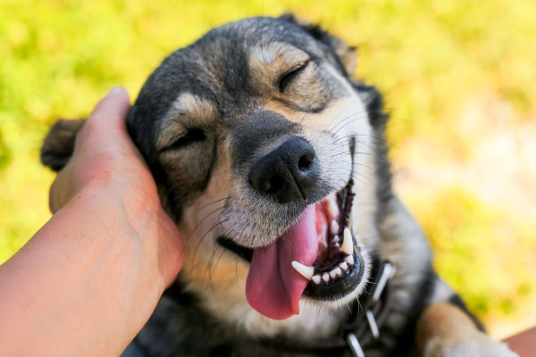

Sobre a Patas & Laços
A Patas & Laços é uma ONG dedicada ao resgate, cuidado e proteção de animais em situação de abandono.
Entre em contato
Email: contato@pataselacos.org.br
Telefone: (49) 99999-9999

A Patas & Laços é uma ONG dedicada ao resgate, cuidado e proteção de animais em situação de abandono.
Email: contato@pataselacos.org.br
Telefone: (49) 99999-9999